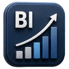

TRÍ TUỆ DOANH NGHIỆP · DỰ ÁN 14

Bảng điều khiển dự án 13 Power BI
Bảng điều khiển trong Power BI · Spotify Charts
Phân tích bảng xếp hạng Spotify Charts bằng dữ liệu công khai về bài hát, nghệ sĩ, album và thị trường. Bảng điều khiển tương tác Power BI giúp tìm hiểu lượt nghe, sự hiện diện trên bảng xếp hạng, vị trí dẫn đầu theo thời gian và phân bố theo khu vực.

BỐI CẢNH VÀ MỤC TIÊU
Xây dựng bảng điều khiển phân tích trong Power BI dựa trên dữ liệu công khai từ Spotify Charts, tích hợp các bài hát, nghệ sĩ, album, ngày tháng và thị trường để hiểu cách phân bổ sự hiện diện của âm nhạc trên các bảng xếp hạng khác nhau.
Dự án tìm cách phân tích bài hát nào tập trung lượng phát trực tuyến lớn nhất, nghệ sĩ nào duy trì sự hiện diện trong bảng xếp hạng, vị trí dẫn đầu thay đổi như thế nào theo thời gian và thị trường nào giải thích hoạt động lớn nhất trong tập dữ liệu.
MÔ HÌNH VÀ PHÁT TRIỂN
- Sử dụng dữ liệu công khai Spotify Charts làm nguồn chính để phân tích thứ hạng bài hát hàng ngày, thứ hạng nghệ sĩ hàng ngày và thứ hạng album hàng tuần.
- Chuẩn bị mô hình dữ liệu với các bảng dữ kiện, thứ nguyên và mối quan hệ được định hướng để phân tích trong Power BI, tách biệt các bài hát, nghệ sĩ, album, quốc gia, ngày tháng và thông tin hỗ trợ trực quan.
- Xây dựng các chỉ số để đo lường tổng lượt phát, số lần xuất hiện trên bảng xếp hạng, vị trí tốt nhất, lọt vào Top 10, sự hiện diện theo thị trường, mức độ tập trung của các bài hát dẫn đầu và sự tiến triển theo thời gian của bảng xếp hạng.
- Khám phá các mô hình tiêu thụ âm nhạc thông qua hình ảnh tương tác, bộ lọc theo thời kỳ, quốc gia, nhóm thị trường, nghệ sĩ và bài hát.
TÌNH TRẠNG HIỆN TẠI VÀ CÁC BƯỚC TIẾP THEO
Sự phát triển hiện tại kết nối việc chuẩn bị dữ liệu, mô hình hóa quan hệ và trực quan hóa trong Power BI để xây dựng khả năng đọc rõ ràng về bảng xếp hạng âm nhạc Spotify.
Kết quả mong đợi là một bảng điều khiển tương tác theo định hướng danh mục đầu tư, có tính thẩm mỹ tối, khả năng đọc và đồ họa dành cho người điều hành tập trung vào việc phát hiện sự tập trung, khả năng lãnh đạo, sự hiện diện theo lãnh thổ và sự phát triển của biểu đồ.